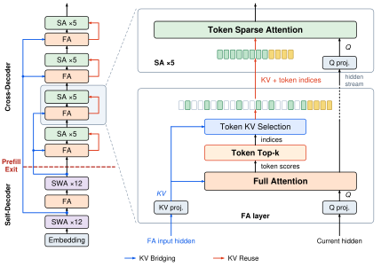
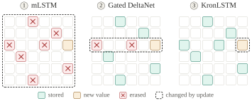

性能数字来自所引论文或官方报告，实验条件随引用标注；源码分析与独立性能复现分别说明。更新记录保留原快照日期。
未标注提交版本的源码节选用于解释机制，省略项需结合原仓库补全。配套 标准库数值示例可用 Python 独立运行，覆盖核化注意力递推、Gated DeltaNet、AWQ、量化编码与单位置拒绝采样；它不验证论文训练结果或 GPU 性能。
Q/K/V → KV 头共享 → 学习压缩 → 精确 IO 优化 → 稀疏连接 → 核化与固定状态 → 状态更新。相关发布记录见“近期进展”。
Q 是当前查询、K 是检索标签、V 是被读取的内容。RoPE 对 Q/K 做位置相关旋转，改变二者内积的相对位置关系；V 保持内容语义。MLA 改参数化与缓存；FlashAttention 精确计算相同 softmax；稀疏/核化/递推则改变连接或算子，不能把三类都叫同一种"线性化"。
| 路线 | 它改变什么 | 何时要重新判断 |
|---|---|---|
| 局部窗口 | Mistral 用局部连接限制每层可读历史 | 跨层传播不等于任意远距离精确检索 |
| 核近似 | Performer 等近似 softmax 核；ELU 线性注意力直接替换核 | 要检查近似误差、归一化与状态容量 |
| 精确分布式 | Ring Attention 跨设备分块计算全局注意力 | 节省单卡容量，不消除二次总计算 |
值得做的研究：同训练 token、参数与推理 FLOPs 下，混合比例怎样影响检索、推理、稳定性和实际时延？不能由若干模型都选 3:1 推出普遍最优。WY/Gram/预条件与复杂度类属于进阶材料，可最后阅读。
以上条目已于 2026-11-01 对照 arXiv 题名、作者与首发日期；比较设计选择，不作跨论文性能排名。
"注意力机制"的发展史，本质上是一部与两个物理约束作斗争的历史：注意力矩阵带来的 O(n²) 计算量，以及自回归解码时必须缓存历史的 KV 缓存线性增长。今天听到的各种名词，从 MHA、MQA、GQA、MLA、FlashAttention，到稀疏注意力、线性注意力、Mamba 和混合架构，都可以看作从不同角度攻这两个约束的努力。
M3.1-Flash（428B-A23B、1M）把 MSA 块稀疏铺满全部注意力层：128-token 块 + NVFP4 KV QAT，GB300 单用户 418.9 tok/s。
→ 跳到详情HypeNet/HALO 入选 EMNLP 2026 主会：不足预训练 0.01% 的 token 把 Qwen3 全系转混合线性，HyPE 位置编码，已开源。
→ 跳到详情"三家前沿实验室生产用 KDA 跑 1M+ RL"，Pavlichenko 与 Hatamizadeh 隔空交锋，Beyer 看好 SWA、Catanzaro 转发。
→ 跳到详情Muse Spark Open：62 层中 46 层 SWA（2048/RoPE）+16 层全局 NoPE、GQA 128/16，KV 缩 3.7×、1M 上下文。
→ 跳到详情2013–2014 年的主流机器翻译模型是编码器–解码器（Encoder–Decoder）结构：一个 RNN 把整个源语言句子读完后压缩成一个固定长度的向量，另一个 RNN 再从这个向量生成目标句子。 Bahdanau 等人在论文引言里一针见血地指出了它的缺陷[Bahdanau et al., arXiv:1409.0473, v1 2014-09-01, ICLR 2015]：
注意力的核心思想由此诞生：与其把整句话压成一个向量，不如让解码器在生成每一个目标词时， 回头"查看"源句的所有位置，并自行决定看哪里、看多少。具体做法是：用一个打分函数 eij = a(si−1, hj) 衡量"上一个解码状态 si−1"与"第 j 个源词的编码 hj"的匹配程度， softmax 归一化成权重，再加权求和得到该步专用的上下文向量 ci：
因为打分函数由一个前馈网络（带可学习参数）计算，这叫"加性注意力"。 Luong et al.（2015）随后系统对比了打分函数的选型（dot / general / concat）与 global/local 两种注意力， 发现 dot/general 打分又快又好，为后来 Transformer 直接用点积埋下伏笔[Luong et al., EMNLP 2015, arXiv:1508.04025, 2015-08]：
2017 年 6 月，Google 的 Vaswani 等人提出了 Transformer：既然注意力这么有效，干脆把循环网络整个扔掉， 只用注意力来堆模型。这就是 Transformer[Vaswani et al., NeurIPS 2017, arXiv:1706.03762, 2017-06-12]：
为什么扔得掉？因为 RNN 的唯一不可替代性曾是"让相邻时刻传递信息"，而这件事注意力也能做（每个位置直接看到所有历史位置）， 且所有位置可以并行计算，不像 RNN 必须逐步递推。代价则是本篇综述的主角：计算量随序列长度平方增长。 此后 GPT（2018-06）与 BERT（2018-10, arXiv:1810.04805）把"Transformer + 预训练"变成范式， 自注意力从此成为语言模型的标准零件。
自注意力把每个 token 的表示 xt 投影成三个向量： 查询（Query，"我想找什么"）、键（Key，"我这里有什么标签"）、值（Value，"我的实际内容"）。 拿查询去和所有位置的键做点积（衡量相似度），经 softmax 变成权重，再对值加权求和。 直觉上，这就是"带着问题在图书馆检索，越匹配的书被翻得越多"。公式只有一行：
三个实现细节：
单个注意力头只能产生一种加权方式。Transformer 把 d 维表示切成 h 份（例如 d=768, h=12，每头 64 维）， 每头独立做注意力再拼接：有的头学句法依赖、有的头学共指消解，互不干扰。 原论文的解释已成为经典[Vaswani et al., 2017]：
karpathy 的 nanoGPT 是最好的教学实现。注意两件事：① Q/K/V 用一个大矩阵 c_attn 一次算出（3*n_embd）；
② 有 PyTorch ≥ 2.0 就直接调 FlashAttention 内核 scaled_dot_product_attention，没有则手写朴素版本。
两条路径的数学完全相同，这正是第 5 节"IO 优化"的伏笔。
class CausalSelfAttention(nn.Module): def __init__(self, config): # 一次投影出所有头的 q,k,v（GPT-2 风格：三个矩阵拼成一个） self.c_attn = nn.Linear(config.n_embd, 3 * config.n_embd, bias=config.bias) self.c_proj = nn.Linear(config.n_embd, config.n_embd, bias=config.bias) # flash attention make GPU go brrrrr but support is only in PyTorch >= 2.0 self.flash = hasattr(torch.nn.functional, 'scaled_dot_product_attention') def forward(self, x): B, T, C = x.size() # batch, 序列长, 特征维 q, k, v = self.c_attn(x).split(self.n_embd, dim=2) # 拆成 n_head 个头: (B, T, C) -> (B, n_head, T, head_dim) k = k.view(B, T, self.n_head, C // self.n_head).transpose(1, 2) q = q.view(B, T, self.n_head, C // self.n_head).transpose(1, 2) v = v.view(B, T, self.n_head, C // self.n_head).transpose(1, 2) if self.flash: # 走 FlashAttention CUDA 内核 y = torch.nn.functional.scaled_dot_product_attention( q, k, v, is_causal=True) else: # 手写朴素版：数学上等价 att = (q @ k.transpose(-2, -1)) * (1.0 / math.sqrt(k.size(-1))) att = att.masked_fill(self.bias[:,:,:T,:T] == 0, float('-inf')) att = F.softmax(att, dim=-1) y = att @ v y = y.transpose(1, 2).contiguous().view(B, T, C) # 拼回各头 return self.resid_dropout(self.c_proj(y))
训练时整句话一起算（并行），但生成时必须一个 token 一个 token 地吐。第 1000 步生成时， 前 999 个 token 的 K、V 向量都得留着（否则每步都要重算整段前缀）。这就是 KV 缓存。 它每个 token 都要新增 2 × 层数 × KV头数 × 头维度 个元素（bf16 下再乘 2 字节），随上下文线性增长，而且解码的每一步都要把它整个从显存读一遍。 很快大家意识到：解码慢不是因为算不动（每步只有 1 个 query），而是因为内存带宽搬不动 KV 缓存。Shazeer 的 MQA 论文把这一点说得很直白[Shazeer, arXiv:1911.02150, 2019-11-06]：
attention_notes/verify.py 实算的一笔账（BF16，公式：每 token 缓存字节 = 2(K和V) × 层数 × KV头数 × 头维 × 2B）：
| 配置 | 每 token 缓存 | 128K 上下文 | 1M 上下文 |
|---|---|---|---|
| Llama-3-70B 若用 MHA（80层×64头） | 2560 KB | 320 GB | 2.56 TB |
| Llama-3-70B 实际 GQA（80层×8 KV头） | 320 KB | 40 GB | 320 GB |
| 若用 MQA（80层×1 KV头） | 40 KB | 5 GB | 40 GB |
| DeepSeek-V3 的 MLA（61层×576维潜向量） | ≈70 KB | ≈8.6 GB | ≈69 GB |
Shazeer 的方案极其朴素：既然搬运 K/V 是瓶颈，那就把 K/V 变小：所有查询头共享同一个 KV 头。 KV 缓存直接除以头数 h（上表：64 头模型缩小 64 倍），解码每 token 延迟在 TPU 上从 46μs 降到 3.8μs（约 12×）， 而 WMT14 翻译质量几乎无损（BLEU 28.5 vs 28.4）[Shazeer, 2019]：
Google 的 GQA 论文给出了工程上最优雅的一击：把查询头分组，每组共享一个 KV 头。KV 头数 = 1 时退化为 MQA， = 查询头数时就是 MHA，中间任取[Ainslie et al., EMNLP 2023, arXiv:2305.13245, 2023-05-22]。 更妙的是"uptraining"：把已有 MHA 检查点每组的 KV 头做平均池化合并，再以约 5% 的原始训练算力继续训练即可转换。
GQA 迅速成为工业标准。Llama 2 论文写道"Bigger models — 34B and 70B — use Grouped-Query Attention (GQA) for improved inference scalability."（arXiv:2307.09288, 2023-07）； Llama 3 全系 8B/70B 均采用 GQA；Qwen3（2025-04）仍是 64 查询头 / 8 KV 头的 GQA。
Meta 的 llama 参考仓库清晰展示了 GQA 的全部秘密：n_kv_heads 可以小于 n_heads，
缓存只按 KV 头存，算注意力前把每个 KV 头"复制 n_rep 份"对齐到查询头，缓存省了，计算照旧。
def repeat_kv(x: torch.Tensor, n_rep: int) -> torch.Tensor: """torch.repeat_interleave(x, dim=2, repeats=n_rep)""" bs, slen, n_kv_heads, head_dim = x.shape if n_rep == 1: return x # MHA 情形直接返回 return (x[:, :, :, None, :].expand(bs, slen, n_kv_heads, n_rep, head_dim) .reshape(bs, slen, n_kv_heads * n_rep, head_dim)) class Attention(nn.Module): def __init__(self, args: ModelArgs): self.n_kv_heads = args.n_heads if args.n_kv_heads is None else args.n_kv_heads self.n_local_heads = args.n_heads // model_parallel_size # 64 个查询头 self.n_local_kv_heads = self.n_kv_heads // model_parallel_size # 8 个 KV 头 (GQA) self.n_rep = self.n_local_heads // self.n_local_kv_heads # 每组 8 个查询头共享 1 个 KV 头 self.wq = ColumnParallelLinear(args.dim, args.n_heads * self.head_dim, ...) self.wk = ColumnParallelLinear(args.dim, self.n_kv_heads * self.head_dim, ...) # 更小 self.wv = ColumnParallelLinear(args.dim, self.n_kv_heads * self.head_dim, ...) # 更小 # KV 缓存形状只跟 n_kv_heads 有关：(batch, max_seq, n_kv_heads, head_dim) self.cache_k = torch.zeros(args.max_batch_size, args.max_seq_len, self.n_local_kv_heads, self.head_dim).cuda() def forward(self, x, start_pos, freqs_cis, mask): xq, xk, xv = self.wq(x), self.wk(x), self.wv(x) xq, xk = apply_rotary_emb(xq, xk, freqs_cis=freqs_cis) # RoPE 位置编码 self.cache_k[:bsz, start_pos : start_pos + seqlen] = xk # 只缓存 KV 头 self.cache_v[:bsz, start_pos : start_pos + seqlen] = xv keys = repeat_kv(self.cache_k[:bsz, :start_pos+seqlen], self.n_rep) # 广播对齐查询头 values = repeat_kv(self.cache_v[:bsz, :start_pos+seqlen], self.n_rep) scores = torch.matmul(xq, keys.transpose(2, 3)) / math.sqrt(self.head_dim) scores = F.softmax(scores.float(), dim=-1).type_as(xq) output = torch.matmul(scores, values) return self.wo(output)
GQA 靠"少存几个头"省显存，是拍脑袋砍结构；DeepSeek-V2 提出的 MLA（Multi-head Latent Attention） 则问了一个更本质的问题：真的有必要为每个头存完整的 K、V 吗？ 答案是否定的。K 和 V 都是同一个输入 x 的线性投影，模型可以通过训练学到低秩约束下的联合表示；当然，仅凭输入相同，推不出 K/V 必然近似低秩。 MLA 干脆只缓存一个低维"潜向量"，要用时再投影回各头[DeepSeek-AI, arXiv:2405.04434, 2024-05]：
具体分两步（图示为单头，实际多头共享同一潜向量）：
这样每 token 每层只需缓存 576 维（512 潜空间 + 64 RoPE 键）， 而 64 头 MHA 需要 2×64×128 = 16384 个元素，元素数约为 1/28； 93.3% 是 DeepSeek-V2 整模型相对 DeepSeek 67B 的报告结果；与等效 GQA 组数的结构计算是另一种比较："KV 缓存减少 93.3%、等效于只带 2.25 个 KV 组的 GQA"。 上表实算：DeepSeek-V3（61 层）每 token 约 70 KB（MLA 每层只缓存单一共享潜向量 576 元素，不再有独立的 K、V 两份），约为 Llama-3-70B GQA（320 KB）的 22%，却能支撑 128K 上下文。
(1) 权重吸收（matrix absorption）。朴素实现是"先上投影再算注意力"，那计算量和缓存都回来了。 MLA 的妙招是把 WUK/WUV 反向吸收进 WQ 和 WO： 因为 kt,i⊤qt,i = (WUKict)⊤q = ct⊤(WUK⊤iq)， 解码时可以直接用"吸收后的查询"对潜向量打分、再用潜向量聚合，全程不物化 K/V。训练时用朴素形式（并行高效），解码时用吸收形式（缓存最小）。
(2) 解耦 RoPE（decoupled RoPE）。位置编码 RoPE 是在 Q、K 上做旋转（标准 RoPE 不旋转 V），而旋转会破坏"先压缩再升维"的线性结构（不同头的旋转不同，无法提前压进共享潜向量）。 MLA 的处理：把键拆成"内容部分"（低秩压缩，不带位置）和"位置部分"（一个所有头共享的 64 维 kR，带 RoPE）， 两部分分数相加。代价是缓存多 64 维（512+64=576）。
DeepSeek 开源推理代码里 attn_impl 有两个分支："naive"（物化 K/V，便于理解）与
"absorb"（权重吸收，实际部署）。下面节选核心差异。注意 kv_cache 的形状只有 (batch, seq, kv_lora_rank)：
class MLA(nn.Module): def __init__(self, args: ModelArgs): self.kv_lora_rank = args.kv_lora_rank # 512: 共享潜向量维度 self.qk_nope_head_dim = args.qk_nope_head_dim # 128: 键的"内容"部分 self.qk_rope_head_dim = args.qk_rope_head_dim # 64: 键的"位置"部分(解耦RoPE) # 下投影: x -> (512 维潜向量 c_KV ‖ 64 维共享 RoPE 键) —— 一次线性搞定 self.wkv_a = Linear(self.dim, self.kv_lora_rank + self.qk_rope_head_dim) self.kv_norm = RMSNorm(self.kv_lora_rank) # 上投影: 潜向量 -> 各头的 (k_nope 128 维 ‖ v 128 维) self.wkv_b = ColumnParallelLinear(self.kv_lora_rank, self.n_heads * (self.qk_nope_head_dim + self.v_head_dim)) if attn_impl == "absorb": # 部署模式: 只缓存潜向量和RoPE键! self.register_buffer("kv_cache", torch.zeros( args.max_batch_size, args.max_seq_len, self.kv_lora_rank)) # (B,T,512) self.register_buffer("pe_cache", torch.zeros( args.max_batch_size, args.max_seq_len, self.qk_rope_head_dim)) # (B,T,64) def forward(self, x, start_pos, freqs_cis, mask): q = self.wq(x).view(bsz, seqlen, self.n_local_heads, self.qk_head_dim) q_nope, q_pe = torch.split(q, [self.qk_nope_head_dim, self.qk_rope_head_dim], dim=-1) q_pe = apply_rotary_emb(q_pe, freqs_cis) kv, k_pe = torch.split(self.wkv_a(x), [self.kv_lora_rank, self.qk_rope_head_dim], dim=-1) if attn_impl == "absorb": # 关键一步: 把上投影 W_UK 吸收进 q —— q_nope @ W_UK, 之后直接对潜向量打分 wkv_b = self.wkv_b.weight.view(self.n_local_heads, -1, self.kv_lora_rank) q_nope = torch.einsum("bshd,hdc->bshc", q_nope, wkv_b[:, :self.qk_nope_head_dim]) self.kv_cache[:bsz, start_pos:end_pos] = self.kv_norm(kv) # 只存 512 维! self.pe_cache[:bsz, start_pos:end_pos] = k_pe.squeeze(2) scores = (torch.einsum("bshc,btc->bsht", q_nope, self.kv_cache[:bsz,:end_pos]) + torch.einsum("bshr,btr->bsht", q_pe, self.pe_cache[:bsz,:end_pos])) * self.softmax_scale # 内容分数 + 位置分数 scores = scores.softmax(dim=-1, dtype=torch.float32).type_as(x) if attn_impl == "absorb": x = torch.einsum("bsht,btc->bshc", scores, self.kv_cache[:bsz,:end_pos]) # 对潜向量聚合 x = torch.einsum("bshc,hdc->bshd", x, wkv_b[:, -self.v_head_dim:]) # W_UV 也吸收到输出侧 return self.wo(x.flatten(2))
从 2017 到 2022，大家都在改注意力的数学（稀疏化、线性化）。Tri Dao 等人的 FlashAttention 换了个角度： 标准实现的真正开销在于要把 n×n 的注意力矩阵在 GPU 显存（HBM）里写出去再读回来， 而 GPU 的片上 SRAM 比 HBM 快一个数量级。数学上一步不差，只是换一种分块计算的顺序，让 softmax 以"在线更新"方式在 SRAM 里逐块完成， 中间矩阵从不落盘[Dao et al., NeurIPS 2022, arXiv:2205.14135, 2022-05-27]：
效果：显存从 O(n²) 降到 O(n)（省 10 倍+），训练更快（GPT-2 快 3×），反向传播用重计算换显存。
它还顺带把 16K/64K 的 Long Range Arena 任务首次拉到超过随机的水平。很多"长上下文不行"，其实是显存先爆了。
本地仓库 repos/flash-attention 即官方实现（含 CUDA/Triton 内核与哈达玛精度工具）。
| 版本 | 时间 | 核心改动 | 关键数字 |
|---|---|---|---|
| FlashAttention-1 | 2022-05 | IO 感知 tiling + 在线 softmax + 反向重计算 | 省 10× 显存；GPT-2 训练 3×；BERT-large 比 MLPerf 纪录快 15% |
| FlashAttention-2 | 2023-07 [Dao, arXiv:2307.08691] | 减少非矩阵乘 FLOPs、序列维并行、warp 分工 | 比 FA1 快 ~2×，A100 上 225 TFLOPs/s（72% 利用率），"reaching 50-73% of the theoretical maximum FLOPs/s on A100" |
| FlashAttention-3 | 2024-07 [Shah et al., arXiv:2407.08608] | Hopper 架构：warp 特化+异步流水（WGMMA）、FP8 | "achieves speedup on H100 GPUs by 1.5-2.0× with FP16 reaching up to 740 TFLOPs/s (75% utilization), and with FP8 reaching close to 1.2 PFLOPs/s" |
| FlashAttention-4 | 2025-08 官方博客预告 [Zadouri et al., FlashAttention-4 Blog]（已有 arXiv:2603.05451，2026-03-05 首发；预印本公开不等于同行评审录用，本行博客数据需与论文实验设置分开） | 首个纯 Python（CuTeDSL）实现；面向 Blackwell 的全异步 MMA 流水、软件模拟 exp | B200 BF16 上比 cuDNN 9.13 最高快 1.3×、比 Triton 快 2.7×，峰值约 1613 TFLOPs/s（71% 利用率） |
注意力算得再快，KV 缓存的管理还是粗放的"按最大长度预留连续显存"。vLLM 借用操作系统虚拟内存分页思想： KV 缓存切成固定大小的块，逻辑块→物理块用页表映射，注意力内核支持在非连续显存上计算[Kwon et al., SOSP 2023, arXiv:2309.06180]：
PyTorch 2.5 的 FlexAttention（2024）则把"允许研究者用几行 Python 定义注意力变体、自动编译成接近手写内核"变成现实，
显著降低了稀疏注意力等变体的实现门槛（与 NSA/MoBA 等的可复现 kernel 生态相辅相成）。
本地 repos/vllm 与 repos/sglang 可对照阅读当今推理引擎对 GQA/MLA/滑动窗/混合层的统一抽象。
最早的高效注意力思路：注意力矩阵大部分接近零（softmax 后很多位置权重极小），那就干脆只算一部分位置对。
2025 年 2 月，DeepSeek 与月之暗面几乎同时发布"从预训练起就稀疏"的方案，直接冲着超长上下文的解码访存去：
NSA（Native Sparse Attention，DeepSeek）[Yuan et al., arXiv:2502.11089, 2025-02]： 三分支门控结构：压缩分支（块内 KV 聚合成粗粒度 token）、选择分支（按 64-token 块粒度挑选最相关的块）、 滑窗分支（近期上下文精确计算），三者可学习门控融合。所有分支粒度都对齐硬件（块状访存、GQA 组内共享 KV），在 27B（GQA+MoE）骨干、260B token 上预训练，性能持平或超过全注意力。
关键数字：64K 上下文解码 11.6× 加速（等效访存 65536→5632 token）、前向 9.0×、反向 6.0×（论文 3.2 节）。
MoBA（Mixture of Block Attention，月之暗面）[Lu et al., arXiv:2502.13189, 2025-02-18, NeurIPS 2025 Spotlight]： 把 MoE 的 top-k 路由思想搬进注意力：上下文切块，query 与"块平均键"内积选块，只对选中的块做精确注意力； 因果性由"当前块强制路由"保证；已在 Kimi 生产环境服务长上下文请求。原文："the ability to seamlessly transition between full and sparse attention… MoBA has already been deployed to support Kimi's long-context requests."（译：可在全/稀疏注意力间无缝切换……MoBA 已部署支撑 Kimi 的长上下文请求。）1M 预填充最高 6.5×，扩展到 10M token 时注意力计算时间降 16×。
SeerAttention[Gao et al., arXiv:2410.13276, 2024-10-17（v4 2025-02）]： 让模型自己学出稀疏模式：在注意力块内插入一个轻量可学习门（Q/K 沿序列池化后过线性层相乘）预测块级稀疏度， 用改造版 FlashAttention 内核输出的注意力图做自蒸馏（Llama-3.1-8B 仅需 0.5B token、约 40 A100 小时）， 自发学出 A 形、竖条等长上下文常见模式。原文："SeerAttention achieves highly linear speedup over dense configurations, delivering a 7.3× speedup with 90% sparsity on sequences of 128k."（译：相对稠密配置呈高度线性加速，128K 序列、90% 稀疏度下实现 7.3× 加速。）
同期还有 XAttention（反対角线打分做块选择, arXiv:2503.16428, 2025-03）等；FLA 库 v0.5.2（2026-07）已内置 NSA 训练/解码内核与 DSA 参考实现，Gated Slot Attention-2 正在合入主库（2026-10）。 2026 年的新方向包括"免训练原生稀疏"（Training-Free Native Sparse Attention, OpenReview 2026，声称最高 16× 压缩） 与潜空间稀疏（SALS, NeurIPS 2025）等，细节仍在快速演化。
核验：2026-11-03 · 新论文与工程快照
Prism 把“该看哪些块”放进视听模型的训练过程。它先把视频划成时空区域，结合视频特征变化和音频对视觉的影响，决定区域内的块形状，再按查询选择注意力块。这里稀疏的是交互连接，不是直接删除图像 token；它也不是给任意预训练模型套上就能复用的免训练插件。论文首发 2026-10-04，项目 10-06 开放训练、推理与预览权重，11-03 核验仍将 Prism-pro 列为待发布。[R26:PRISMP][R26:PRISM]
FlashMLA 的算法名称不能代替版本兼容表。2026-09-30 的破坏性更新移除了 Hopper 与部分旧模型支持，并改变低精度 KV 格式。复用旧代码示例时，应连同 GPU 架构、模型、缓存布局和仓库提交一起固定；“支持 MLA”不足以保证一个内核能加载所有 MLA 模型。[R26:FLASHMLA]
10-30 首发、11-02 修订：ZHA 把索引成本也计入复杂度。它对缓存中的 Key 摘要递归构树，查询自顶向下选取稀疏位置；树深可增长，因此不能只计算最后一次稀疏 QK，而忽略路由。论文通过短程 KL 蒸馏改造已有模型，属于需要训练的近似路线；对极长上下文的外推还使用性能模型，不能读成已经在十亿 token 上完成端到端部署实测。[R26:ZHA]
softmax 注意力 O(n²) 的根源是必须先算出完整的 n×n 打分矩阵。Katharopoulos 等人 2020 年的观察是： softmax(qᵀk) 本质是指数核，任何核都能写成特征映射的内积 k(x,y)=⟨φ(x),φ(y)⟩； 将 softmax 核替换为非负特征映射内积（需配分母归一化）后，矩阵乘法的结合律就救场了[Katharopoulos et al., ICML 2020, arXiv:2006.16236；题名为 Transformers are RNNs: Fast Autoregressive Transformers with Linear Attention，v1 2020-06-29、v2 2020-06-30；Linear Transformers Are Secretly Fast Weight Programmers 是另一篇 2021 年工作]：
实践中 φ 常取 elu(x)+1（保证非负、梯度好）。更漂亮的是因果掩码下的等价 RNN 形式： 每个时间步只维护一个 dk×dv 的矩阵状态 S（"外积记忆库"）和一个归一化向量 z：
这正是论文标题"Transformers are RNNs"的含义：训练时用并行形式（分块矩阵乘），推理时用递推形式（每步 O(d²)、与序列长度无关）， 是鱼与熊掌兼得的最初蓝图。
def naive_recurrent_linear_attn(q, k, v, scale=None, ...): S = torch.zeros((B, H, K, V)) # 矩阵状态: 每头一个 K×V 外积记忆 for t in range(T): S = S + torch.einsum('bhk,bhv->bhkv', k[:, t], v[:, t]) # S_t = S_{t-1} + k v^T o[:, t] = torch.einsum('bhkv,bhk->bhv', S, q[:, t] * scale) # o_t = q S_t return o, S def naive_chunk_linear_attn(q, k, v, ...): # 训练用分块并行形式 q = rearrange(q, 'b (n c) h d -> b h n c d', c=chunk_size) * scale kv = (k† @ v).cumsum(2) # 块间: 前缀和（递推仅剩块级） inter = q @ kv_shifted # 跨块贡献: 走过去的历史 intra = ((q @ k†).tril()) @ v # 块内贡献: 小的 C×C 注意力 return inter + intra # 与逐步递推数学等价
†为按块重排后的张量，此处略去 rearrange 细节；本节是省略形状变换的教学伪代码，展示未归一化内积累积；不能直接代替上一节含 φ 与 z 的完整核化注意力。可运行的完整对照见本文配套 scripts/verify-mechanisms.py。
attention_notes/verify.py，
B=2,T=128,H=4,K=16,V=32，φ=elu+1）：递推输出与并行输出最大误差 6.8×10⁻¹³。该本地实验在所列 dtype、形状及简化算子下接近数值精度；它不验证 softmax attention 等价，也不验证论文性能。完整核化形式还需特征映射、分母归一化及一致的因果掩码。
朴素的 S 只加不减，状态维度固定，但数值尺度可能增大、旧信息可能相互干扰。2023 年两个工作给出修复：
repos/flash-linear-attention（FLA）库的起点。与此同时，另一批人从控制论的经典状态空间模型（SSM）出发：ht = Āht−1 + B̄xt, yt = Cht。 S4（2021-2022）用特殊结构让长程依赖稳定可学；Mamba（2023-12）的关键一步是"选择性"，即让 Ā、B̄ 依赖输入[Gu & Dao, arXiv:2312.00752, 2023-12-01]：
硬件上，Mamba 用核融合的并行扫描（parallel scan）在 GPU 上高效递推；Mamba-3B 质量匹敌 2 倍大的 Transformer。 2024 年 5 月，Mamba-2/SSD（arXiv:2405.21060）干脆把两条路线在理论上统一： 线性注意力与（标量结构）SSM 是同一个算子的两种计算顺序，通过"结构化半可分矩阵"相连：
统一视角 Y = (L ∘ CB⊤)X 中，L 是结构化掩码：线性注意力是"L=因果下三角"的特例，Mamba-2 是"L=数据依赖衰减"， RWKV-7（arXiv:2503.14456, 2025-03）则把状态转移做成动态演化的低秩修正（Diag(α)−(b⊙k̂)k̂⊤），可解部分状态跟踪任务。 这一联系可表述为：部分线性注意力、矩阵状态 RNN 与结构化 SSM 可在特定参数化下建立联系；它们的状态更新与适用条件仍需分别讨论。
固定大小状态意味着信息必然被压缩。理论工作精确刻画了代价：Zoology（ICLR 2024, arXiv:2312.04927）构造 MQAR 任务证明 亚二次模型的"回忆能力-吞吐量"权衡。"Repeat After Me"（ICML 2024, arXiv:2402.01032）证明 复制长序列任务上 Transformer 严格强于 SSM。"RNNs are not Transformers (yet)"（ICLR 2025, arXiv:2402.18510） 指出瓶颈在上下文内检索。"The Illusion of State in State-Space Models"（arXiv:2404.08819, ICLR 2025）证明 有限精度下 SSM 塌缩到 TC⁰ 复杂度类、做不了非平凡状态跟踪。Kimi Linear 论文的引言对这一切做了精炼总结[Kimi Team, arXiv:2510.26692, 2025-10]：
结论顺理成章：要么给线性注意力更强的状态更新规则（第 8 节），要么掺回少量全注意力层（第 9 节混合架构）。2025 年后的工业实践两者都做。
Schlag 等人 2021 年的"Linear Transformers are Secretly Fast Weight Programmers"（ICML 2021, arXiv:2102.11174） 给出了一种解释：线性注意力的状态更新 St = St−1 + ktvt⊤ 等价于对目标 L(S)=−⟨S⊤kt, vt⟩ 做梯度下降（等价于对正内积做梯度上升），效果是只强化、不遗忘，旧关联无限堆积； 而如果换成重建损失 L(S)=½‖S⊤kt − vt‖²，一步梯度下降会得到（Kimi Linear 论文 §2.2 的记号）：
直觉：写新键值对之前，先把状态里"当前键 kt 已关联的旧值"读出来减掉（βt 是学习率/步长）。 这是一个"可纠错的联想记忆"，信息不再无限叠加，检索精度大幅提高。Kimi Linear 论文对此的表述： "DeltaNet reinterprets this recurrence as online gradient descent on a reconstruction objective"（译：DeltaNet 把这个递推重新解释为对重建目标的在线梯度下降）。
并行化：I−βkk⊤ 形式的转移矩阵不交换，看起来只能逐步递推。 Yang & Wang（"Parallelizing Linear Transformers with the Delta Rule over Sequence Length", NeurIPS 2024, arXiv:2406.06484） 用 Householder/WY 表示把一串秩一修打包成单个稠密表示，得到块级并行算法，DeltaNet 训练不再是序列级的串行噩梦。 门控：Gated DeltaNet（"Gated Delta Networks: Improving Mamba2 with Delta Rule", arXiv:2412.06464, 2024-12, ICLR 2025） 在 DeltaNet 上再加 Mamba-2 式遗忘门：
for i in range(T): b_q, b_k, b_v = q[:, :, i], k[:, :, i], v[:, :, i].clone() h = h.clone() * g[:, :, i].exp()[..., None, None] # ① 遗忘门: S *= α_t = exp(log g) b_beta = beta[:, :, i] # ② 学习率 β_t (sigmoid) b_v = b_v - (h.clone() * b_k[..., None]).sum(-2) # ③ 读旧值: v_read = S^T k b_v = b_v * b_beta[..., None] # ④ 残差 = β(v − v_read) —— delta! h = h.clone() + b_k.unsqueeze(-1) * b_v.unsqueeze(-2) # ⑤ 写入: S += k (残差)^T o[:, :, i] = torch.einsum('bhd,bhdm->bhm', b_q, h) # ⑥ 读出: o = q^T S
生产用的是 chunkwise Triton 内核（同目录 chunk.py / wy_fast.py），数学与此等价；逐步版本最适合建立直觉。
| 模型 | 时间 / 出处 | 状态更新（简式） | 主要改进 |
|---|---|---|---|
| 线性注意力 | 2020 | S = S + kv⊤ | 只写不擦，固定维度状态中的关联干扰可能增加 |
| RetNet / Mamba-2 | 2023 / 2024 | S = αtS + kv⊤ | RetNet：各头固定衰减；Mamba-2：数据依赖的标量遗忘 |
| GLA | 2024 | S = Diag(αt)S + kv⊤ | 遗忘升级为逐通道 |
| DeltaNet | 2021→2024 并行化 | S = (I−βkk⊤)S + βkv⊤ | 写前定点擦除（纠错） |
| Gated DeltaNet | 2024-12, ICLR 2025 | S = αt(I−βkk⊤)S + βkv⊤ | 遗忘 + 擦除双机制；被 Qwen3-Next 采用 |
| KDA（Kimi Delta Attention） | 2025-10 [arXiv:2510.26692] | S = (I−βkk⊤)·Diag(αt)S + βkv⊤ | 标量遗忘→逐通道遗忘，类 DPLR 的高效块算法；Kimi Linear 的核心层 |
| Mamba-3 | 2026-03, ICLR 2026 [arXiv:2603.15569] | 复数态转移（数据依赖旋转）+ 梯形离散化 + MIMO | 解决状态跟踪（奇偶性/模运算）；解码 FLOPs ×4 而延迟不增 |
| GDN-2 | 2026-05, NVIDIA [arXiv:2605.22791] | S = (I−k e⊤)·DtS + k z⊤，e/z 为通道级擦除/写入门 | 擦除与写入门解耦，统一 GDN/KDA 为特例 |
| PGDN / PKDA | 2026-04, MIT+Liquid AI [arXiv:2604.21100] | βt → βt·diag(Gt)（G 为 Gram 逆的近似） | 把二阶曲率/预条件引入递推，测试时回归视角下的加速梯度法 |
几个 2025–2026 代表作的关键数字与原文：
第 7.5 节的天花板（检索/复制）与全注意力的成本各占一端，工业界的解法非常务实： 绝大部分层用线性/递推层（便宜、状态固定），按固定比例穿插少量全注意力层（负责精确检索与全局路由）。 Mamba-3 论文对这一趋势的概括可以当作本节的题眼[Lahoti et al., arXiv:2603.15569, 2026-03]：
| 模型 / 时间 | 组织 | 配比（线性 : 注意力） | 线性层用什么 | 备注 |
|---|---|---|---|---|
| Griffin / RecurrentGemma（2024-02/04）[De et al., arXiv:2402.19427] | DeepMind | 约 2:1（递推:局部注意力） | RG-LRU（门控线性递推） | 局部（滑窗）注意力即可，无需全局 |
| Jamba（2024-03）[AI21, arXiv:2403.19887] | AI21 | 注意力:Mamba ≈ 1:7 | Mamba | 52B 总参 MoE，首批生产级混合大模型 |
| MiniMax-M1（2025-06-16）[arXiv:2506.13585] | MiniMax | softmax:lightning ≈ 1:7 | Lightning Attention 混合架构 | 456B-A45.9B，1M 上下文；MiniMax-01 是另一份 2025-01 报告 |
| Hunyuan-TurboS（2025-05）[arXiv:2505.15431] | 腾讯 | Mamba:注意力 ≈ 7:1（生产部署） | Mamba-2 | 混元旗舰线上服务 |
| Falcon-H1（2025-07）[arXiv:2507.22448] | TII | 层内并行（每层同时做注意力+SSM） | Mamba-2（层内混合） | 高频基可近似 NoPE，利于长上下文 |
| Qwen3-Next（2025-09-11） | 阿里 Qwen | 3:1（Gated DeltaNet : 门控注意力），256K 上下文 | Gated DeltaNet（FLA 库内核） | 80B-A3B；注意力层加输出门控、head dim 128→256、partial RoPE（前 25% 维）；官方："the model consistently outperforms any monolithic architecture"（译：稳定优于任何单一架构） |
| Kimi Linear（2025-10）[arXiv:2510.26692] | 月之暗面 | 3:1（KDA : MLA） | KDA（逐通道门控 Delta） | 48B-A3B；全注意力层用 NoPE；公平对比下在论文所评测的模型、训练预算与任务下优于所选全注意力基线 |
| Mamba-3 混合实验（2026-03）[arXiv:2603.15569] | CMU/Princeton 等 | 5:1（线性:NoPE 注意力） | Mamba-3 | 混合设置下超过 Transformer 基线 |
把第 3、4、6 节的"省缓存"手段与更多 2023–2026 方法放在一张图上（按"改什么"分类）：
| 类别 | 代表工作（时间） | 机制概要 / 关键数字 |
|---|---|---|
| 结构压缩 （改模型） | MQA（2019）/ GQA（2023） | 共享 KV 头：设查询头数 h、KV 头数 g：MQA 缓存为 MHA 的 1/h，GQA 为 g/h（压缩 h/g 倍，见第 3 节） |
| MLA（DeepSeek-V2, 2024-05） | 低秩潜向量缓存；−93.3% / 5.76× 是 DeepSeek-V2 整模型相对 DeepSeek 67B 的报告结果，含 MoE 等变化，非 MLA 独立消融（见第 4 节） | |
| YOCO（2024-05, arXiv:2405.05254） | "You Only Cache Once"：KV 只在底层算一次、层间共享 | |
| 量化 | KIVI（ICML 2024, arXiv:2402.02750） | 2-bit KV：K 按通道、V 按 token 分组量化 + 全精度近窗； "2.6× less peak memory… up to 4× larger batch size, bringing 2.35×∼3.47× throughput"（译：峰值显存省 2.6×……批大小最多 4×，吞吐 2.35–3.47×） |
| SnapMLA（2026-02, arXiv:2602.10718） | 解决"MLA × 低位量化"不兼容问题，FP8 流水线解码 +1.91× | |
| 驱逐 / 选择 （推理时） | StreamingLLM（ICLR 2024, arXiv:2309.17453） | 注意力汇聚头：保留句首 4 个 sink token + 滑窗，稳定外推 400 万+ token |
| H2O（NeurIPS 2023, arXiv:2306.14048） | 按累计注意力分数保留"重击者"token：20% 预算 ≈ 全 KV 质量 | |
| SnapKV（NeurIPS 2024, arXiv:2404.14469） | 用提示尾部的注意力模式投票压缩 prompt KV："3.6× generation speed and 8.2× memory efficiency @16K"（译：16K 输入下生成提速 3.6×、内存效率 8.2×） | |
| Quest（ICML 2024, arXiv:2406.10774）/ PyramidKV（2024-06） | 查询感知的页级 Top-K 加载（"up to 7.03× self-attention speedup"）；按层金字塔分配预算（"matches full-cache performance with only 12% of the KV cache"） | |
| 压缩记忆 | Infini-attention（2024-04, arXiv:2404.07143） | 块内标准注意力 + 块间线性注意力式压缩记忆，有界显存无限上下文；"114× comprehension ratio in terms of memory size"（译：内存口径压缩比 114×） |
| Titans（ICLR 2025, arXiv:2501.00663）/ TTT（ICML 2025, arXiv:2407.04620） | 把记忆本身做成一个测试时训练的小网络（神经记忆），"learn to memorize at test time" | |
| 可训练稀疏 | NSA / MoBA / SeerAttention（2025） | 见第 6.2 节；均已开源，MoBA 已部署于 Kimi |
| DSA（DeepSeek Sparse Attention，V3.2-Exp 2025-09-29；报告 arXiv:2512.02556, 2025-12） | NSA 思路的工业落地：lightning indexer（FP8 轻量索引器）+ 细粒度 top-k（k=2048）token 选择，"DSA reduces the core attention complexity of the main model from O(L²) to O(Lk)"（译：把核心注意力复杂度从 O(L²) 降到 O(Lk)）；GLM-5 亦采用并证明 DSA 续训 20B token 即可"构造上无损" |
repos/KIVI、repos/KVQuant、repos/AutoAWQ 等即相关方向的官方开源实现。
把截至 2026 年 10 月主要开源/可考证模型用的注意力结构集中对齐（闭源模型 GPT-5.x / Gemini 3 / Claude 均未官方披露架构， OpenAI 最佳公开参照是 gpt-oss：128 窗口滑窗 + 局部/全局层交错 + RoPE/YaRN）：
| 模型（时间） | 组织 | 注意力结构 | 关键事实 / 原文 |
|---|---|---|---|
| DeepSeek-V2 / V3（2024-05 / 2024-12） | DeepSeek | MLA | V3："DeepSeek-V3 still adopts Multi-head Latent Attention (MLA) for efficient inference"（arXiv:2412.19437） |
| DeepSeek-V3.2（2025-09-29 Exp / 2025-12 报告） | DeepSeek | MLA × DSA 稀疏注意力 | DSA = lightning indexer（FP8 轻量索引器）+ 细粒度 top-k（k=2048）token 选择，在 MLA 的 MQA 形态上实例化："DSA reduces the core attention complexity of the main model from O(L²) to O(Lk)"（译：把核心注意力复杂度从 O(L²) 降到 O(Lk)；arXiv:2512.02556）；稀疏训练仅 943.7B token |
| DeepSeek-V4（2026-04 预览，V4-Pro 1.6T-A49B / V4-Flash 284B-A13B，1M 上下文） | DeepSeek | CSA + HCA 混合稀疏注意力最新 | 放弃纯 MLA："a hybrid attention architecture that combines Compressed Sparse Attention (CSA) and Heavily Compressed Attention (HCA)"（译：混合压缩稀疏注意力 CSA 与重压缩注意力 HCA；arXiv:2606.19348）。CSA：每 4 个 token 压缩成 1 条目再做 DSA；HCA：128:1 激进压缩+稠密；另加 128 窗口滑窗分支、attention sink、partial RoPE。1M 上下文下 Pro 仅 V3.2 的 27% FLOPs / 10% KV，Flash 为 10% / 7% |
| Kimi K2 / K2.5（2025-07 / 2026-01） | 月之暗面 | MLA（64 头） | 1T 总参 / 32B 激活 MoE（arXiv:2507.20534 / 2602.02276） |
| Kimi Linear（2025-10） | 月之暗面 | KDA : MLA = 3:1 | 见第 8.4 节（arXiv:2510.26692） |
| Kimi K3（2026-07-16） | 月之暗面 | KDA + 注意力残差（AttnRes）最新 | 2.8T 参数、原生视觉、1M 上下文："Kimi K3 is a 2.8T-parameter model built on our Kimi Delta Attention and Attention Residuals, with native vision capabilities and a 1-million-token context window."（官方博客，译：Kimi K3 基于 Kimi Delta 注意力与注意力残差构建，具备原生视觉与百万 token 上下文。）线性注意力首次撑起超大参数量旗舰 |
| Qwen3（2025-04） | 阿里 | GQA（64 Q / 8 KV） | arXiv:2505.09388 |
| Qwen3-Next（2025-09-11） | 阿里 | Gated DeltaNet : 门控注意力 = 3:1，256K 上下文 | 官方博客："When we mix Gated DeltaNet with standard attention at a 3:1 ratio (75% layers use Gated DeltaNet, 25% keep standard attention), the model consistently outperforms any monolithic architecture."（译：以 3:1 混合 GDN 与标准注意力时，模型稳定优于任何单一架构。）注意力层改造：输出门控、head dim 128→256、partial RoPE（仅前 25% 维度带位置）；官方宣称较 Qwen3-32B 训练便宜 10×、推理快 10× |
| Qwen3.5（2026-02）/ Qwen3.8-Max（2026-08） | 阿里 | 延续 3:1 GDN 混合 | Qwen3.5-397B-A17B、Qwen3.8-Max 2.4T-A95B（1M 上下文）——3:1 配方已沉淀为阿里旗舰标准 |
| Llama 4 Scout/Maverick（2025-04-05） | Meta | iRoPE | "A key innovation in the Llama 4 architecture is the use of interleaved attention layers without positional embeddings. We call this the iRoPE."（官方博客，译：交错使用无位置编码的注意力层——我们称之为 iRoPE。）= 8K 块内 chunked 注意力（RoPE）+ NoPE 全局层交错；Scout 10M / Maverick 1M 上下文；理论源头是 Cohere 的 "RoPE to NoPE"（arXiv:2501.18795）。Llama 5 未发布 |
| Muse Glimmer（2026-08-10 权重 / 10-17 技术报告） | Meta | GQA + 滑窗 SWA | 30B 端侧模型；权重先行发布、技术报告后补——两处日期口径以官方渠道为准[Muse] |
| Muse Spark Open（2026-10-15） | Meta | 混合 SWA + NoPE 全局（62 层中 46 层 SWA 窗口 2048/RoPE + 16 层全局 NoPE） | 816B-A42B 全模态 MoE、1M 上下文；GQA 128 Q/16 KV，官方称 KV 缩 3.7×；8×B300 14.8K tok/s/GPU[Muse] |
| Gemma 3（2025-03）/ Gemma 4（2026-06） | 5:1 局部:全局滑窗（Gemma 4 增加 p-RoPE、keys 复用为 values） | Gemma 3：局部滑窗 1024（arXiv:2503.19786）；Gemma 4 报告（arXiv:2607.02770）："reduce the global KV cache footprint by up to 37.5%"（译：全局层 KV 缓存占用最多减少 37.5%） | |
| MiniMax-01 / M1（2025-01 / 2025-06） | MiniMax | Lightning Attention，7:1 | "within every 8 layers, 7 are based on Lightning Attention with linear attention, and 1 layer employs traditional SoftMax attention."（arXiv:2501.08313，译：每 8 层中 7 层用线性闪电注意力，1 层用传统 softmax 注意力。）M1：456B-A45.9B，1M 上下文 |
| MiniMax-M2 / M2.5（2025-10 / 2026-02） | MiniMax | 回归全注意力（M2.5 用 MHA）争议 | 线性路线的著名反例。官方解释："Compute is finite. We need an architecture that makes better use of it"（译：算力是有限的，我们需要更会用算力的架构）——线性注意力在其多跳推理实验中缺陷明显；M2.5 一度是唯一坚持 MHA 的前沿模型（"for reliability purposes"，为了可靠性）；2026-06 的 M3 已转向 GQA+MSA 块稀疏（arXiv:2606.13392） |
| GLM-4.5 / 4.6（2025-07 / 2025-09） | 智谱 | GQA-8（96 Q / 8 KV，partial RoPE） | arXiv:2508.06471 |
| GLM-5（2026-02）/ GLM-5.2（2026-06） | 智谱 | MLA + DSA（744B-A40B，80 层）最新 | "we adopt DSA (DeepSeek Sparse Attention), a novel architectural innovation that significantly reduces both training and inference costs."（arXiv:2602.15763，译：我们采用 DSA 显著降低训练与推理成本。）自研 MLA-256 变体 + Muon Split 优化器适配；DSA 续训仅 20B token（DeepSeek 用 943.7B）即"lossless by construction"（构造上无损）；消融显示固定滑窗交错在 RULER@128K 掉 30 分。GLM-5.2 再加 IndexShare：每 4 层稀疏注意力共享同一索引器，1M 上下文每 token FLOPs 降 2.9× |
| Mistral Large 3（2025-12） | Mistral | 据第三方分析 ≈ DeepSeek-V3 式 MLA（中等可信度） | 675B Apache 2.0 MoE；官方未出技术报告 |
| Nemotron-H（2025-04） | NVIDIA | Mamba-2 混合，仅 ~8% 层为注意力 | "Roughly 8% of the total layers in the model are self-attention layers"（arXiv:2504.03624，译：模型中约 8% 的层是自注意力层；56B 版 118 层仅 10 层注意力），推理快约 20% |
| Hunyuan-TurboS（2025-05） | 腾讯 | Mamba-2 × Transformer × FFN 混合 MoE | 首个超大规模 Hybrid-Mamba 生产模型（arXiv:2505.15431）；Hunyuan-Large（2024-11）为 GQA |
| gpt-oss（2025-08） | OpenAI | 128 窗口滑窗 + 局部/全局层交错 | OpenAI 目前唯一可考证的架构公开渠道（社区分析）；GPT-5.x 未披露 |
测试时计算（长思维链、agent 轨迹、RL 训练）让"解码"从模型的配角变成成本主角。Mamba-3 论文开篇即以此立论[arXiv:2603.15569, 2026-03]： "Scaling inference-time compute has emerged as an important driver of LLM performance, making inference efficiency a central focus of model design alongside model quality." （译：推理时算力的扩展已成为 LLM 性能的重要驱动力，使推理效率与模型质量并列为模型设计的核心焦点。） Kimi Linear 的立项动机同理：agentic 负载"解码重、上下文长"，KV 缓存与二次注意力是首要瓶颈。 可预期的趋势：注意力结构的选择将由"每 token 解码成本/每比特上下文成本"直接驱动（DSA/CSA/HCA/IndexShare 只是开始），而非仅仅由困惑度驱动。
过去三年的主线，是给固定状态装上越来越精细的"编辑工具"：遗忘门从标量做到通道级，Delta 规则带来纠错写入，GDN-2 把擦除与写入解耦，Mamba-3 引入复数态旋转与 MIMO，PGDN/PKDA 再上二阶预条件。 理论上，状态跟踪能力（奇偶性、群组合）需要非交换/负特征值/复数转移（Grazzi et al. 2025; DeltaProduct, arXiv:2502.10297）， 检索能力受有限状态容量约束（Wen et al. 2025）。下一步的开放问题：在硬件可并行（WY/UT 表示、块状算法）的约束下， 状态更新规则的表现力上限在哪里？"在线学习视角"（测试时回归）是否会收敛出一个标准更新式？
SSD 把 SSM 与线性注意力统一为结构化矩阵；测试时回归（TTR, arXiv:2501.12352）把各种递推统一为在线最小二乘； Parallax 更进一步用非参数统计解释 softmax 本身（局部常数估计），并展示"softmax + 协方差修正"可以同时优于纯 softmax 与线性注意力； Google 的 Titans 系列将记忆、注意力、在线优化纳入同一框架（"It's all connected", ICLR 2026）。 趋势：注意力设计正从"经验拼装"走向"有原理的设计空间"。带宽、探针构造、仿射结构、预条件子这些统计学术语，正在进入架构论文的标题。
Parallax 首次实证"架构优势依赖优化器几何"（Muon 下显著、AdamW 下消失）；DeepSeek-V4 与 GLM-5 都需要为 MLA/Muon 组合做专门适配（GLM 的 "Muon Split"）； 混合模型对 RoPE 基频敏感、NoPE 全局层成为流行解。未来架构搜索空间将包含优化器与位置编码两个维度；"DSA 是否无损"这类问题会与训练配方深度绑定。
FlashAttention-4 用纯 Python（CuTeDSL）写内核，编译快 20–30×；cuDNN 已原生提供 NSA 稀疏内核。FlexAttention 让自定义掩码达到 FA2 的 85–90%； FLA 库覆盖 40+ 线性注意力变体，在 NVIDIA/AMD/Intel 三家都做了验证。SGLang/vLLM 则为 DeepSeek-V4、Qwen3-Next 做 day-0 支持。 判断一个新注意力能否存活的标准问题清单：块状访存？GEMM 占比？可写 Triton/TileLang/CuTeDSL 内核？反向传播重计算代价？跨硬件可移植？——算法创新与内核创新已不可分离。
单一手段（GQA 或量化）已不够，生产栈正在叠乘：低秩（MLA）× 稀疏（DSA/NSA）× 压缩（CSA/HCA、YOCO）× 量化（KIVI 2-bit、FP8）× 分页共享（PagedAttention）。 随之而来的是数值稳定性与可靠性的新问题（SnapMLA 指出 MLA 与低位量化的天然冲突；GDN-2 论文专门处理 gate-aware 反向传播）。 上下文经济学：当 1M token 的 KV 缓存从 TB 级降到 GB 级，"图书馆式全局记忆"与"压缩记忆"的边界会被重画。
attention_notes/verify.py，
亲手验证线性注意力"递推=并行"；③ 读 FLA 库 fla/ops/*/naive.py 系列的教学实现（每个变体 20 行）；
④ 读 DeepSeek-V3 的 MLA 前向（本文第 4.3 节代码）理解"权重吸收"；⑤ 跟踪 FLA News 与 vLLM/SGLang 博客：
这个领域的重要进展有一半是先出现在内核仓库 README 里的。
这一波更新的三个关键词：块稀疏注意力被 MiniMax / Qwen 两家旗舰采纳（此前只有 DeepSeek NSA / GLM DSA 路线）；KV 压缩与注意力结构彻底合流（DeepSeek-V4.1 把 KV 压到 890 字节/token）；线性注意力的"写侧稀疏"成为学术新热点。
动机：DSA/MoBA 等现有稀疏注意力没有为 GQA 的"组内共享 KV"做设计：各头各自选块的"并集"会把缓存撑爆，访存模式也与 GPU 不匹配，1M 上下文无法部署。
贡献：MiniMax（联合北大、NVIDIA 等）在 GQA 之上加一个轻量 Index Branch：按每个 GQA 组独立给 KV 块打分、选 Top-k（每组 top-16 × 128-token 块 ≈ 2048 个 token），Main Branch 只对选中块做精确 block-sparse softmax；配套"KV 外层收集 Q"内核，每个 KV 块只从显存读一次。
收益：109B-A6B 验证模型上，1M 上下文每 token 注意力 FLOPs 降低 28.4×；H800 上 prefill 14.2×、decode 7.6×。M3 本体（428B-A23B、1M 上下文）SWE-bench Verified 80.5%。内核开源于 github.com/MiniMax-AI/MSA。
"We introduce MiniMax Sparse Attention (MSA), a blockwise sparse attention built upon Grouped Query Attention (GQA). A lightweight Index Branch scores key-value blocks and independently selects a Top-k subset for each GQA group, enabling group-specific sparse retrieval while maintaining efficient block-level execution." — MiniMax 等, arXiv:2606.13392, 2026-06-11 我们提出 MSA——一种建立在 GQA 之上的块级稀疏注意力。轻量索引支路为 KV 块打分，并为每个 GQA 组独立选取 Top-k 子集，在保持高效块级执行的同时实现组内专属的稀疏检索。
阿里 8 月 26 日开源 Qwen4 架构预览（125B-A6B 多模态 MoE）：把混合层里"每第 4 层全注意力"替换为 QSA（块级稀疏选取，预算 512 块 / 2048 token），配方从"GDN + 全注意力"变为"GDN + 稀疏注意力"。另有两项配套：51B 参数 n-gram 嵌入表（第 2 层注入、放主机内存，"查表换计算"）与 4B MTP 头；官方称训练成本约为 Qwen3.7-Plus 的 1/9，262K 原生上下文（YaRN 扩 1M）。这是"保留的全注意力层成为下一个成本大头"的直接证据。
V4 的 CSA/HCA 混合再进化为纯 CSA2（跨层共享主 KV 与索引器 K、Top-K 索引复用）+ CED 因果编码器-解码器（解码器的全局 KV 由编码器最终隐状态投影而来，砍掉近一半 prefill 计算）+ MXFP4 主 KV 经 QAT 训练。收益：全局 KV cache 890 字节/token（约为 V4-Flash 的 1/4、V1 的 1/437）；上下文从 4K 扩到 1M，decode FLOPs 仅增 1/4。
"The widespread adoption of long-horizon agents has made model workloads increasingly input-heavy." — DeepSeek-AI, DeepSeek-V4.1-Flash 技术报告, arXiv:2609.19969, 2026-09-17 长程智能体的普及使模型负载日益偏向输入侧。
同期 Kimi K3 技术报告（arXiv:2607.24653，2026-07-27）公开了 KDA 的工程细节：衰减参数化重写解决 chunkwise 计算瓶颈；FlashKDA 内核（CUTLASS 实现）在 H20 上 prefill 比 flash-linear-attention 基线快 1.72–2.22×，可作为 FLA 的直接替换后端。NVIDIA Nemotron 3 Ultra（2026-06，550B-A55B）则把混合 Mamba-2 MoE 推到 1M 上下文：108 层中注意力块仅 12 个（占比约 11%：48 Mamba-2 + 48 MoE + 12 attention），推理吞吐最高约 6×。[2026-10-16 勘误：此前记为"约 6%"，经核对应为 12/108≈11%]
线性注意力的固定状态容量墙有了两类新解法（与 §8.4"记忆编辑军备竞赛"衔接）：
四件新事：ReplaySSM 指出混合模型的解码瓶颈已从注意力层转移到 SSM 状态读写；GLM-5.3-Flash 把"线性 + 稀疏"两种注意力混进同一模型（上期遗漏，补录）；块选择的复杂度从 O(N²/C) 降到 O(N log N)（PISA）；快手让 Summary token 一身兼二职（KSA V2）。
动机：批量服务（~100K 上下文以内）时混合模型的解码瓶颈其实是 SSM/线性注意力层的状态读写，而非注意力层；固定大小状态快照还阻碍投机解码回滚与量化。
贡献：把 SSM 递归状态改表示为"检查点 + 最近输入缓冲区"（每 16 步 flush 一次），解耦输出计算与状态更新。这样投机解码验证不再需要构建中间状态，还支持 NVFP4 读 + FP32 递归的低误差量化。
收益：内核加速 1.46–1.80×、解码步 1.20–1.47×（B300/H100, batch 256）；投机吞吐 1.85–2.10×（T=4, batch 512, 120B 级模型）；128K 上下文 KL 散度 0.136 → 0.0038。已进入 TensorRT-LLM、vLLM、SGLang、FlashInfer；GLM-5.3-Flash 已生产使用。
"State-space models (SSMs) maintain a fixed-size recurrent state, but reading and writing it at every decoding step can bottleneck hybrid models." — Liou et al., NVIDIA & Princeton (Dao AI Lab), ReplaySSM, arXiv:2610.13778, 2026-10-09 状态空间模型维持固定大小的递归状态，但每步解码都读写它，反而会让混合模型陷入瓶颈。
320B-A18B 的 MIT 开源模型：45 层中 34 层 KDA（Moonshot 线性注意力）+ 11 层 DeepSeek 式稀疏注意力（index_topk 2048），并用 IndexPool（4 个索引器 key 向量加权池化为 1）压索引器开销；mHC 超连接、原生多模态、1M 上下文。发布前以"Ox Alpha"匿名登顶 OpenRouter/OpenCode 榜。官方口径：对比 GLM-5.3 注意力计算量降 3.0×、KV cache 小 4.4×。"线性管成本、稀疏管精确检索"的分工自此有了旗舰级样本。与标准版 GLM-5.3 的注意力差异一句话点明：标准版全层走注意力路线（MLA latent 压缩 + DSA 式 indexer top-2048 稀疏），Flash 版则把 34/45 层换成 KDA 固定状态、只留 11 层稀疏注意力。同一家族内，"latent 压缩"与"线性状态"两条减 KV 路线并行成套。

面向"动作短、观察长"的长程 agent：两级 KV 共享。外层只桥接 YOCO 式双解码器中的全注意力层，内层把块级稀疏细化为 token 级选择；prefill 可在 self-decoder 后提前退出。80B-A3B 上 1M token prefill FLOPs 较混合 SWA 降 5.02×，KV 2.69GB vs 12.09GB；已验证至 290B-A8B。窗口期 alphaxiv 热度第一。
FlashMLA 2026.09.30 版本移除 Hopper 支持、仅留 SM100/SM103，并新增华为昇腾 950 NPU 稀疏 prefill/decode 内核。注意力内核的硬件版图在分化。NeurIPS 2026 确认收录 GDN-2（擦/写解耦）、Raven（写侧稀疏记忆路由）、STILL、CSLA 等线性注意力论文；另见 GateSight（上交，GDN 递归记忆做 query 无关 KV 驱逐，arXiv:2610.14754）与 LatentIndex（北大+小红书，稀疏索引器跨层共享，arXiv:2610.04635）。
记忆更新只沿单一方向 (k⊗v) 纠错，不做 GDN/KDA 的整键擦除：干扰更小、检索更稳。1.5B/100B token 四个模型开源（Avg-6 59.72，全面超 KDA 58.12 / GDN-2 57.94 / Mamba-3 57.31；RULER 自 16k 起胜 GDN-2；H100 吞吐较 GDN-2 快 11–18%）。基于 FLA 的 Triton 内核实现、代码开源：github.com/NX-AI/KronLSTM，论文 arXiv:2610.26834。

预存文本片段 + 骨干原生特征寻址 + 回放读取：GDN-1.3B 的 RULER@1M 从 1.7% 拉到 70.3%，仅 +≤0.025% FLOPs，持久存储只有同规模 MHA KV 的 1/2600。§7.5 论证的线性注意力"检索/复制天花板"第一次被免训练手段显著绕过（arXiv:2610.15715）。
Triadic 用 k⊗k′⊗v 三阶张量状态：第二键维带来 E 倍状态容量而只加两个投影，triadic GDN(E=8) 全面优于加头/加宽等扩状态方案，且可从预训练 GDN upcycle（arXiv:2609.36529，70 票）。GSA-2（HKUST(GZ)+腾讯，arXiv:2610.02816）把纠错做到读写"双侧"联想记忆；FLA 主库 10-19~20 连续 7 个 PR 合入中。两者共同指向 §11.3 上期判断的落点：状态容量与记忆编辑正取代"又一个核"成为线性注意力的主战场。
FlashAttention v2.8.3.post2（CVE 修复、反向 dq_accum int32 溢出修复、CUDA 13 wheels）；FLA 新增 Sinkhorn 归一化内核、KDA/AttnRes 的 triton-ascend（昇腾）后端（Triton-Ascend 3.6.0 / CANN 9.1 适配）。内核版图继续向国产硬件扩散。LeapQuant（Berkeley/UW/MIT/Perplexity/NVIDIA，arXiv:2609.38166）专攻 GDN/KDA 混合模型的循环状态量化（注意：不是 KV 量化），与 ReplaySSM 互证"SSM 状态成为新瓶颈"。FreeSolo（NUS，arXiv:2610.17191）用"固定状态存键位置、检索按需取回"做到线性时间稀疏注意力 + 零样本长度外推；KPage（快手 KlingAI+NVIDIA，arXiv:2610.28096）把稀疏注意力的跨块页压缩再降一档复杂度。同期工作：DeltaNet-PC 测试时记忆免 BPTT（2610.15185）；循环深度的临床 NLP 落地（Eli Lilly+NVIDIA，2610.27559）。
（按主题分组；日期为 arXiv v1 或官方发布日期。机制转述与直接引文分别标注，具体结论按所引版本和实验设置阅读。）